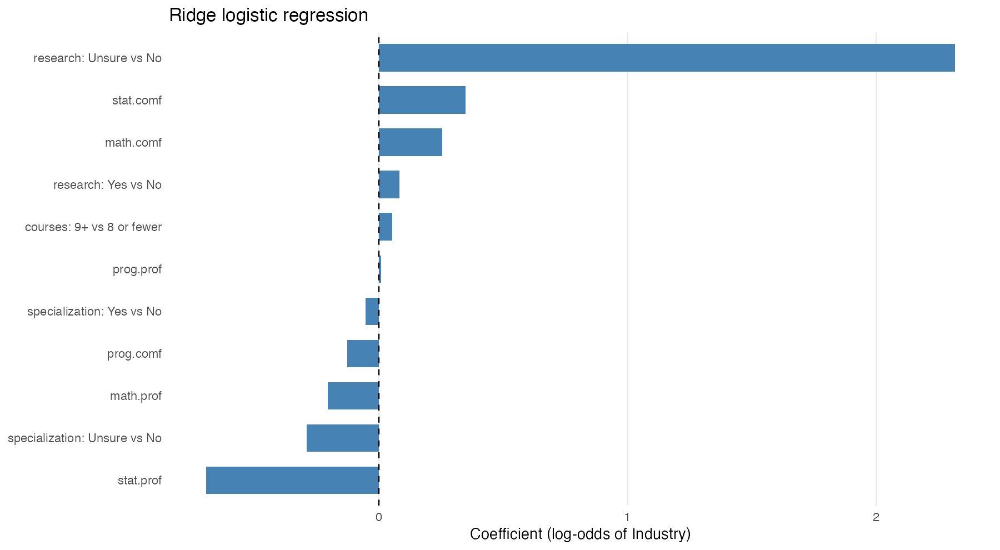
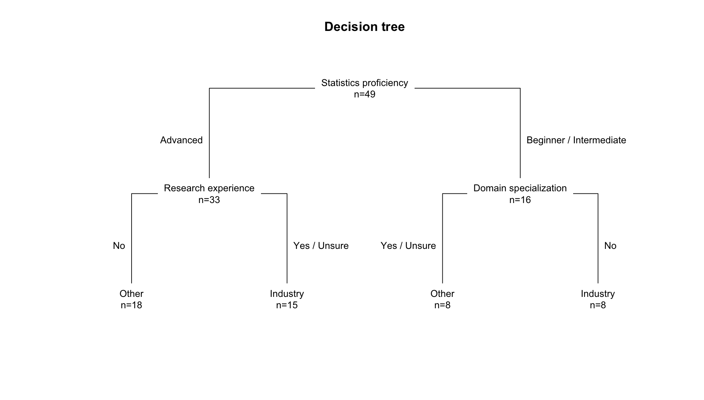

Analysis of class surveys
Executive summary
We analyzed responses to the PSTAT 197A intake survey, completed by 55 students in Fall 2026, of whom 51 consented to share their background responses and 49 consented to both sections. We examined three questions: whether course history is associated with students’ self rated ability in programming, math, and stats; whether research experience or other background characteristics relate to a preference for industry over research projects; and what explains the timing of survey submissions. First, no course was significantly associated with overall self rated proficiency in a multiple regression model, a result that held across several model versions. The closest signals appeared in statistics, where students who had taken PSTAT 115 or PSTAT 131 more often rated themselves as advanced (p ≈ 0.06), though both estimates rested on small comparison groups. Second, students strongly preferred industry projects (32 of 49), but this preference was unrelated to research experience (Fisher’s exact test, p = 0.84), and predictive models using all background variables performed no better than chance. This suggests a class-wide interest in industry experience, possibly reflecting current job market pressures, rather than one tied to backgrounds. Third, submissions clustered around class announcements: the assignment day alone drew 15 responses, and about 78% of students had responded by the first reminder. Taken together, students’ self-reported backgrounds explained little about their perceived skills or preferences, while their behavior responded clearly to direct prompts. These conclusions are limited by the small sample, the self reported nature of all measures, and the similar course histories of most students, which left few meaningful comparison groups; our findings are therefore best viewed as exploratory.
Data description
How the data were obtained
The data come from an intake survey given through Google Forms to students enrolled in PSTAT 197A, the UCSB data science capstone class for Fall Quarter 2026. The survey asked about students’ academic backgrounds and their interests related to future capstone projects. It was used to assign students to temporary project teams and to provide the dataset for this analysis.
Every enrolled student was expected to complete the survey as coursework. It was due Sunday, October 4, 2026 at 11:59 p.m. Pacific time.
The course instructor cleaned and de-identified the responses before sharing them. That process included:
- replacing names with artificial respondent IDs to anonymize participants
- removing free-text answers and individual timestamps
- combining the two research-experience questions into one variable
- standardizing spelling variants of major-specific names
- reporting demographics only as class-level counts (i.e. gender and major aren’t tied to individual answers)
Other collection details:
- Collection window: Responses were submitted between September 23 and October 5, 2026. Almost half (23 of 55) arrived on September 24–25, and the rest were spread across the following week and a half. 54 responses were on time and 1 was submitted after the deadline.
- Consent: Students were asked separately whether their responses could be used for the background section and for the project-interest section. Of the 55 respondents, 49 consented to both, 2 consented only to the background section, and 4 consented to neither.
- De-identification: Each response’s
response_iddoesn’t encode identity or submission order. Demographic information can’t be linked to individual responses.
Data files
The two respondent-level files join on response_id, which gives 49 students who answered both sections.
| File | Unit | Rows | Contents |
|---|---|---|---|
background-clean.csv |
Respondent | 51 | Self-rated skills, coursework, domain specialization, research experience |
interest-clean.csv |
Respondent | 49 | Project type, programming language, domain and methods interests |
class-summary.csv |
Category | — | Aggregate demographics for all 55 respondents (standing, gender, race, majors, consent) |
response-timing.csv |
Date | 13 | Number of submissions per day |
survey-metadata.csv |
Variable | — | Data dictionary with question wording and coding notes |
Sample characteristics
The 55 respondents were mostly seniors majoring in Statistics and Data Science.
- Class standing: 89.1% seniors, 9.1% juniors, and 1 junior with senior-level credits.
- Major: 94.5% Statistics and Data Science. One-third (18 students) reported a second major.
- Gender: 54.5% male, 41.8% female, 1 another self-description, 1 preferred not to say.
- Race/ethnicity: 67.3% Asian, 14.5% Caucasian, 10.9% multiracial, 1.8% American Indian or Alaska Native, 5.5% preferred not to say.
Measurements
Background section (n = 51)
| Variable | Type | Summary |
|---|---|---|
| Programming, math, and statistics proficiency | Ordinal: beginner / intermediate / advanced, relative to a typical UCSB undergraduate | Statistics was rated highest (65% advanced). Programming was mostly intermediate (63%), and only 3 students rated themselves beginners in anything. |
| Programming, math, and statistics comfort | Ordinal, 1 (least comfortable) to 5 (most comfortable). No student chose 1. | Mean comfort was 3.71 for programming, 3.94 for math, and 4.14 for statistics. |
| Upper-division courses taken | Ordinal: 3–5 / 6–8 / 9+ | 59% reported 9+, 37% reported 6–8, and 4% reported 3–5. |
| Completed courses | Multiple selection from a list | Median of 7 courses selected. The most common were PSTAT 126 (50), PSTAT 120 (49), PSTAT 131 (46), PSTAT 122 (43), and CS 9 (40). |
| Domain specialization | Yes / No / Unsure | 18 Yes, 25 No, 8 Unsure |
| Supervised research experience | Yes / No / Unsure, derived from two questions (data science and non-data-science research, excluding class and personal projects) | 23 Yes, 24 No, 4 Unsure |
Project-interest section (n = 49)
| Variable | Type | Summary |
|---|---|---|
| Preferred project type | Categorical: industry / research lab / no preference | 32 industry, 6 research lab, 11 no preference |
| Preferred programming language | Categorical: Python / R / no preference | 22 Python, 11 R, 16 no preference |
| Domains of interest | Multiple selection (e.g., technology, biology, public health), with optional write-ins | — |
| Data science areas of interest | Multiple selection (e.g., predictive modeling, deep learning, NLP) | — |
Questions of interest
Our goal was to observe relationships between coursework preparation and perceived ability scores. Additionally, we wanted to find out if there was a relationship between project preference and having research experience. Finally, we wanted to see if we could explain spikes in survey submissions.
Our specific questions are listed below:
- Can a date variable explain spikes in when people submitted the survey?
- Is there any relationship between preferring an industry project with if you’ve done research or not?
- Which course (taken/not taken) has the most difference in perceived ability scores? (multivariable linear regression) Does total amount of upper division classes taken affect perceived ability scores?
Findings
Survey submission timing
Background info: The survey was assigned at the first lecture (Thu Sep 24) and reminded in the next lecture, section and lecture (Tue Sep 29, Wed Sep 30, Thu Oct 1). It was due Sun Oct 4 at 11:59 PM.
Responses came in arguably two to three waves. Two of them happening on a day the survey was mentioned in class. The first class, Thursday, Sep. 24, brought in 15 responses (close to 30% of the class). The following day, Friday Sep. 25, brought on a new wave of responses, summoning 8 more responses. Hence, in roughly 24 hours since the assignment was announced, roughly 44% of the class had completed the survey. The next in-class session/reminder was on Tuesday, Sep. 29, accumulating 10 more responses. This turned the total cumulative percentage of students who completed the survey to 78%. Students did not procrastinate and only 3 responses came in on the deadline (Sunday Oct 4), and one late response (Monday Oct 5). Both are left out of the analysis.
To check whether responses could have been spread evenly across the window, we compared the daily counts with an even split of about 4.8 per day. We used a simulated p-value because the expected daily counts are too small for the standard chi-squared approximation.
| Class contact only | Adding weekend | |
|---|---|---|
| Baseline: responses per day | 3.29 (1.88, 5.27) | 4.67 (2.47, 7.88) |
| Assigned (Thu Sep 24) | 4.57 (1.95, 10.19) | 3.21 (1.44, 7.24) |
| First reminder (Tue Sep 29) | 3.04 (1.11, 7.41) | 2.14 (0.85, 5.17) |
| Later reminders (Wed Sep 30, Thu Oct 1) | 0.76 (0.18, 2.27) | 0.54 (0.15, 1.53) |
| Weekend day | - | 0.48 (0.18, 1.19) |
Used two quasi-poisson models.The “class contact” column predicts daily responses from the type of day: day assigned, first reminder, later reminders, or no class contact. The second column “Adding weekend” is the same model plus a yes/no weekend term. Note, every other row besides “baseline” is a multiplier on that baseline.
The class contact column identifies an “ordinary day” as a weekday or weekend with no class contact. A baseline tells us there is about ~3.3 responses on an ordinary day (no class contact). The Assigned row tells us there were times 4.6 more responses on the Assigned day. The conf interval being well above 1 means the spike is clear (if it includes 1, the data can’t rule out as “no effect”). The first reminder had 3.3 times more than an ordinary day. The later responses were no different from an ordinary day.
Some of the days without class contact were weekends, which may be slow for other reasons. Hence, we re-fit the model with a weekend indicator. The assignment day held up (~3.2 times an ordinary weekday) however, the first reminder diminished to x2.1 times, and the conf interval now includes 1.
We conclude that the survey announcement clearly drove the first wave. The first reminder probably helped, but these data can’t separate its effect from the usual weekday-to-weekend pattern. Later reminders added little.
Project Preference
For our second question, we first performed exploratory data analysis on two variables of interest (research, type). These two variables are categorical, hence the use of bar charts and count tables in our analysis. We found that the data set was uneven in the distribution of those who preferred industry to lab research, but balanced in whether or not the students had research experience. The counts are available in the tables below:
| type | n |
|---|---|
| both | 11 |
| ind | 32 |
| lab | 6 |
| research | n |
|---|---|
| No | 22 |
| Unsure | 4 |
| Yes | 23 |
Additionally, here are the bar graphs of their distributions:


For our bivariate analysis we made a contingency table and stacked bar chart to see if there was any noticeable change in likelihood for being interested in research. The figures are shown below:
| both | ind | lab | |
|---|---|---|---|
| No | 6 | 13 | 3 |
| Unsure | 0 | 4 | 0 |
| Yes | 5 | 15 | 3 |

It’s hard to see if there’s a difference in proportion so we also made a proportion bar chart:

Based on this bar chart, doing research does not seem to significantly affect project preference. Something worth pointing out is that the proportion is very similar for those who did research across all project preference groups. However, for those who preferred industry, there was a lower proportion of people who definitively did research that is made up for by those who were unsure of if they did research or not.
Next, we did hypothesis testing to see if there was any evidence to support a correlation between the two variables. Our null hypothesis is H0: project preference and research experience are independent. Our alternative hypothesis is HA: project preference and research experience are associated. Initially, we used Pearson’s Chi-squared test. However, since only 6 observations recorded that they preferred research, there was not enough observations per unique value for it to be a reliable test. Therefore, we went with Fisher’s Exact Test.
Fisher's Exact Test for Count Data
data: joint$research and joint$type
p-value = 0.8424
alternative hypothesis: two.sidedWe obtained a p-value of 0.8424 > 0.05. Since the p-value is higher than our rejection threshold, we fail to reject H0. There is not enough evidence to suggest that project preference is influenced by whether or not the person did research.
Expanding on the second question,we next examined whether research experience combined with other background variables could predict an explicit preference for industry projects. To do this, we fit ridge logistic regression and a shallow classification tree. Among the 49 respondents, 32 preferred industry, while 17 preferred lab projects or reported no preference. Both models used the same predictors, balanced class weights, and a 0.5 classification threshold. Predictive performance was evaluated using five-fold cross-validation repeated ten times.
| Model | Accuracy | Balanced accuracy | AUC |
|---|---|---|---|
| Always predict Industry | 65.3% | 50.0% | 0.500 |
| Ridge logistic regression | 36.3% | 33.9% | 0.335 |
| Shallow decision tree | 42.2% | 41.3% | 0.358 |
The decision tree performed better than logistic regression across all three metrics, but neither model outperformed the majority-class baseline. Balanced accuracy remained below 50%, and AUC values below 0.5 indicated poor discrimination between the two preference groups. To evaluate model significance, we conducted 499 label permutations, refitting both models through the same validation procedure. The one-sided tests provided no evidence of above-null balanced accuracy (\(p = 0.972\) for logistic regression; \(p = 0.872\) for the tree). Both Benjamini–Hochberg-adjusted p-values were 0.972.
The full-data fits showed several descriptive patterns. In the ridge model, uncertainty about prior research experience was associated with higher predicted industry preference relative to reporting no research experience, holding other predictors constant. Statistics proficiency had a negative coefficient. The tree first separated advanced statistics proficiency (\(n = 33\)) from beginner or intermediate proficiency (\(n = 16\)), then split on research experience and domain specialization. These fitted relationships did not translate into effective out-of-sample prediction. Other parameter settings were also explored without a consistent improvement over the baseline.

